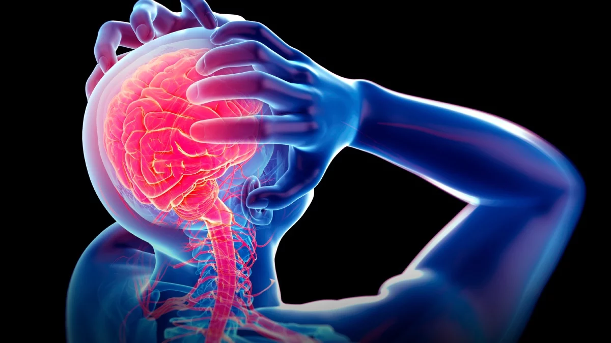

Stress is the body's natural response to situations it perceives as threatening or challenging. It is a physical, mental and emotional reaction that prepares us to face danger or pressure. In small doses, stress can be beneficial, helping us stay alert and motivated. Stress can manifest itself in a variety of ways and affect both the body and the mind.
Physical Symptoms
Headaches: Tension and migraines.Digestive problems: Indigestion, diarrhea or constipation.
Muscle tension: Pain and stiffness in the muscles, especially in the neck and shoulders.
Emotional Symptoms
Anxiety: Feelings of nervousness, excessive worry or fear.Irritability: Feeling easily frustrated or angry.
Sadness or depression: Persistent feelings of sadness or hopelessness.
Cognitive Symptoms
Difficulty concentrating: Problems maintaining attention or making decisions.Irritability: Feeling easily frustrated or angry.
Forgetfulness: Increased frequency of forgetfulness
